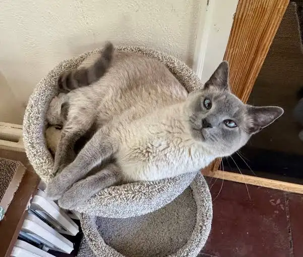
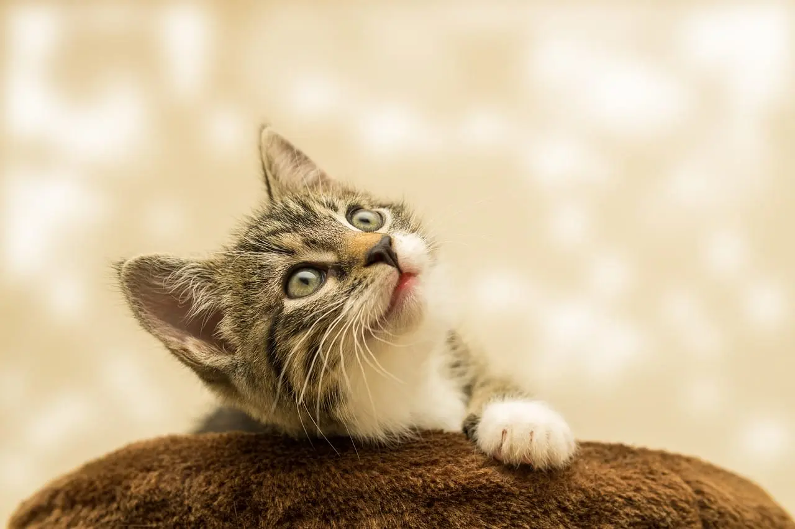

Los gatitos son animales muy adorables, por eso diremos algunos datos curiosos sobre ellos.


Los gatos son uno de los animales más populares en los hogares de todo el mundo y todos nos habremos dado cuenta de que son un poco distantes y tienen su propio espacio, a veces pasan de nosotros, son unos dormilones, les gusta las alturas... Pero hay muchas cosas que no conoces sobre ellos:
datos curiosos sobre gatos
22/Enero/2026 | juan perez